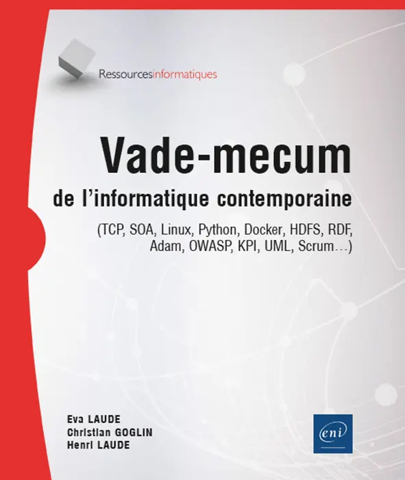
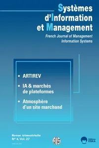
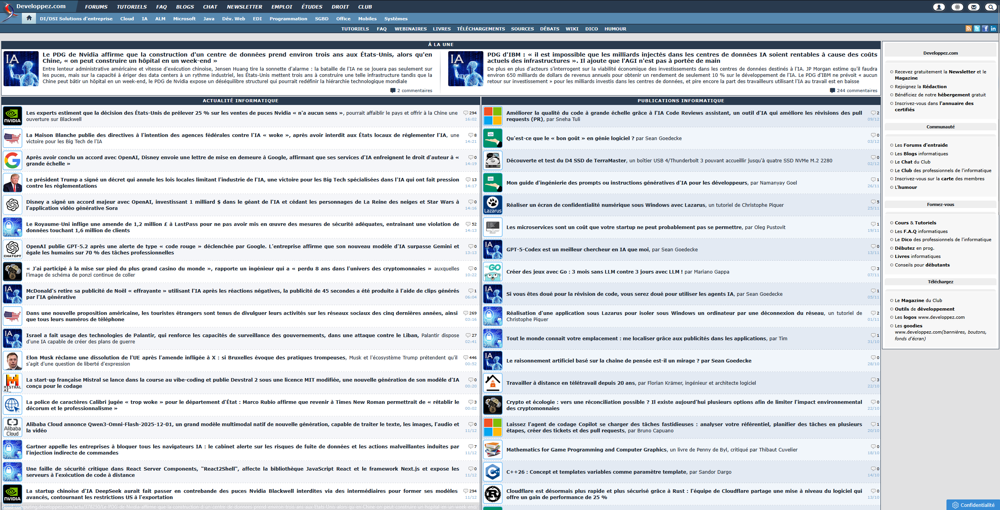
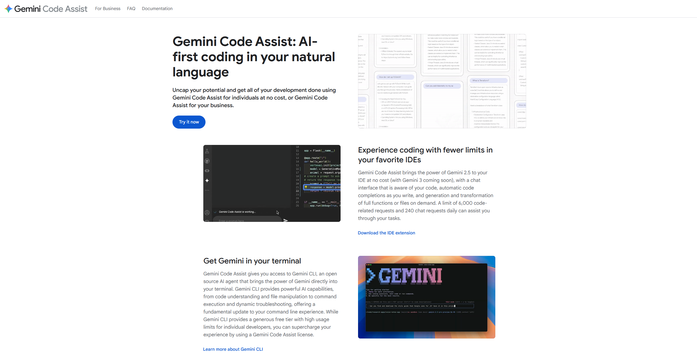

Sources
LIVRE : Vade-mecum de l'informatique contemporaine
Eva LAUDE, Henri LAUDE, Christian GOGLIN, Vade-mecum de l'informatique contemporaine, Édition ENI (broché), Paris : ENI, 2024, 570p. Source : https://www.editions-eni.fr/livre/vade-mecum-de-l-informatique-contemporaine-tcp-soa-linux-python-docker-hdfs-rdf-adam-owasp-kpi-uml-scrum-9782409044113 (consulté le 10/12/2025)
Requête :
Emprunté à la BU de sciences, après avoir feuilleté pas mal de livres.
Motif du choix :
Un livre qui a pour but de préparer les gens lors de leur première insertion professionnelle dans l'univers de l'informatique. J'ai trouvé que l'approche des différents sujets était différente de celle très "scolaire" de la FAC, car elle est plutôt axée sur le monde professionnel et l'attente des entreprises de différents secteurs. Malheureusement ce dernier ne parlait que très peu d'IA, surement à cause de l'avenir encore incertain de la technologie.
ARTICLE DE REVUE : Une mise en perspective technico-économique du rôle central de l’intelligence artificielle sur les marchés de plateformes
Une mise en perspective technico-économique du rôle central de l’intelligence artificielle sur les marchés de plateformes, Systèmes d'information & management, 2023/01, vol. 27, p51-57. Source : https://stm-cairn-info.ressources.univ-poitiers.fr/revue-systemes-d-information-et-management-2022-4-page-51?lang=fr (consulté le 28/11/2025)
Requête
Trouvé en cherchant sur CAIRN "IA développement informatique".
Motif du choix
Approche assez intéressante sur le développement et les IA dans la première partie de l'article. L'IA est ici vue comme un outil pour créer des API (Application Protocol Interface) afin d'interconnecter les infrastructures. J'ai trouvé que c'était un bon exemple où l'IA facilite le métier des développeurs, en les laissant se concentrer sur les parties importantes (et intéressantes accessoirement).
Sources Web
Site 1 : Developpez.com
Developpez LLC. Developpez.com, le club des développeurs et IT Pro. Disponible sur : https://www.developpez.com/ (Consulté le 05/12/2025)
Requête :
J'ai fais un prompt Perplexity et j'ai sélectionné le site que je préférais : "trouve moi des sites clés en rapport avec le métier de développeur informatique"
Motif du choix :
Un site français, véritable mine d'or de tutoriels sur tous les différents aspects du développement informatique (programmation, bases de données, cybersécurité). C'est aussi un site d'actualité très actif. Dans un métier où l'on doit constamment se former et se tenir au courant, je l'ai trouvé très pertinent car assez récent.
Site 2 : CodinGame
CoderPad. Jouez et devenez un meilleur dev sur CodinGame. Disponible sur : https://www.codingame.com/start/fr/ (Consulté le 05/12/2025)
Requête :
J'ai fais un prompt Perplexity et j'ai sélectionné le site que je préférais : "trouve moi des sites pour s'améliorer en tant que développeur informatique"
Motif du choix :
Un site pour s'améliorer en programmation sur lequel je me suis beaucoup attardé. Le concept est original : on doit compléter des codes pour obtenir ce que demande la consigne. J'ai trouvé l'approche assez intéressante et pédagogique donc je l'ai sélectionné.
Site 3 : Gemini Code Assist
Google LLC. Gemini Code Assist : AI-first coding in your natural language. Disponible sur : https://codeassist.google/#available-in-your-terminal-favorite-ides-and-platforms. (Consulté le 29/11/2025)
Requête :
J'ai cherché sur google le site de l'assistant IA de google, je trouvais ça raccord avec le sujet.
Motif du choix :
Je programme dans Visual Studio 2022. Je trouvais intéressant de me renseigner sur l'IA qui m'assiste. L'assistant peut compléter des lignes de code, mais il peut aussi m'expliquer certaines fonctions. J'ai trouvé qu'il était pertinent de mettre un exemple d'IA sur laquelle j'ai la main tous les jours.
VIDÉO : Pourquoi le No-Code est un piège pour les startups

Underscore_. Pourquoi le No-Code est un piège pour les startups. https://www.youtube.com/watch?v=qHPBB5lHSoI (Consulté le 07/12/2025)
Requête :
Je me suis rendu sur YouTube et j'ai cherché des vidéos sur la chaine podcast du vidéaste Micode (Underscore_) en rapport avec l'IA et la programmation.
Motif du choix :
Micode est un vidéaste informatique que je conaissait avant le projet et je trouve qu'il a une façon très claire et intéressante d'aborder les concepts. Ici c'est un podcast sur la question du "No-Code", c'est a dire la programation en utilisant seulement des outils externes (notamment l'IA generative). Il interview un invité qui a essayé de monter un petit buisness en créeant des bases de données strictement en utilisant des outils "No code". Ce dernier raconte comment les problèmes ont commencé à apparaitre, ce qui l'a poussé à abandonner le projet.